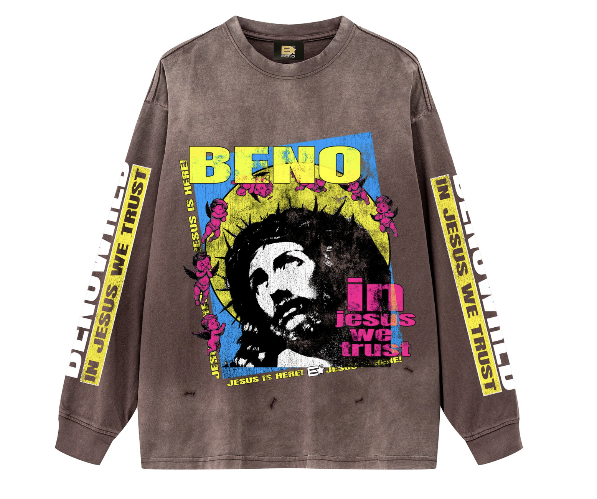
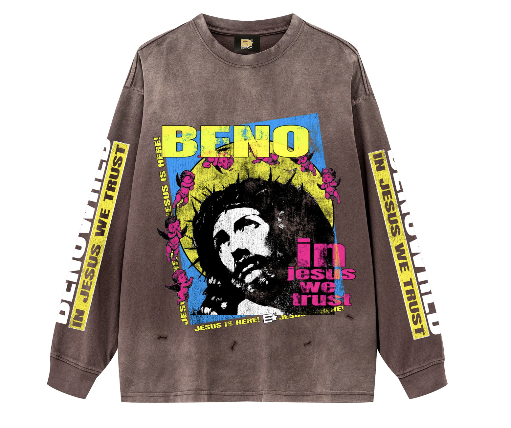
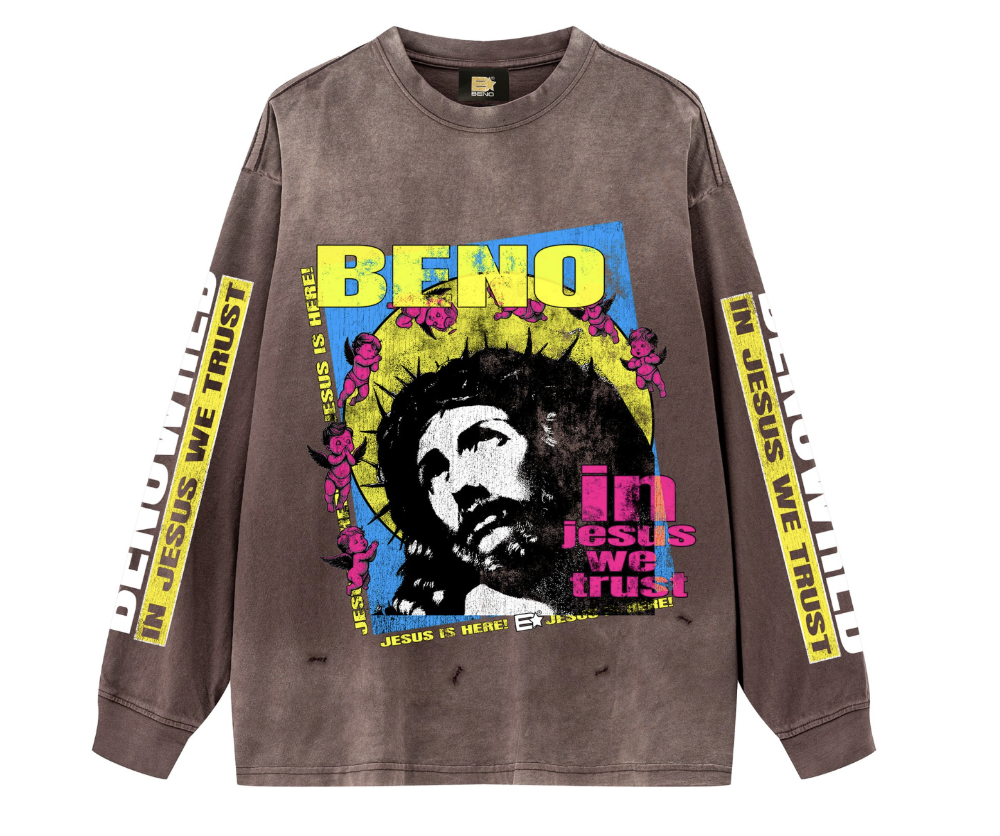
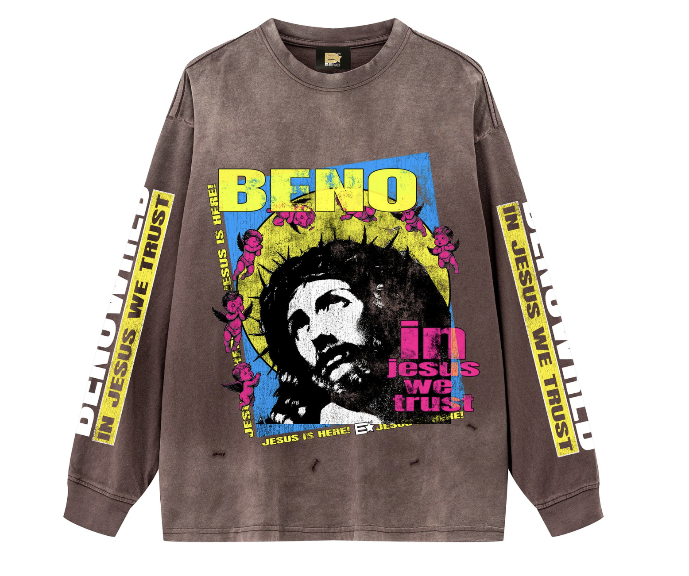
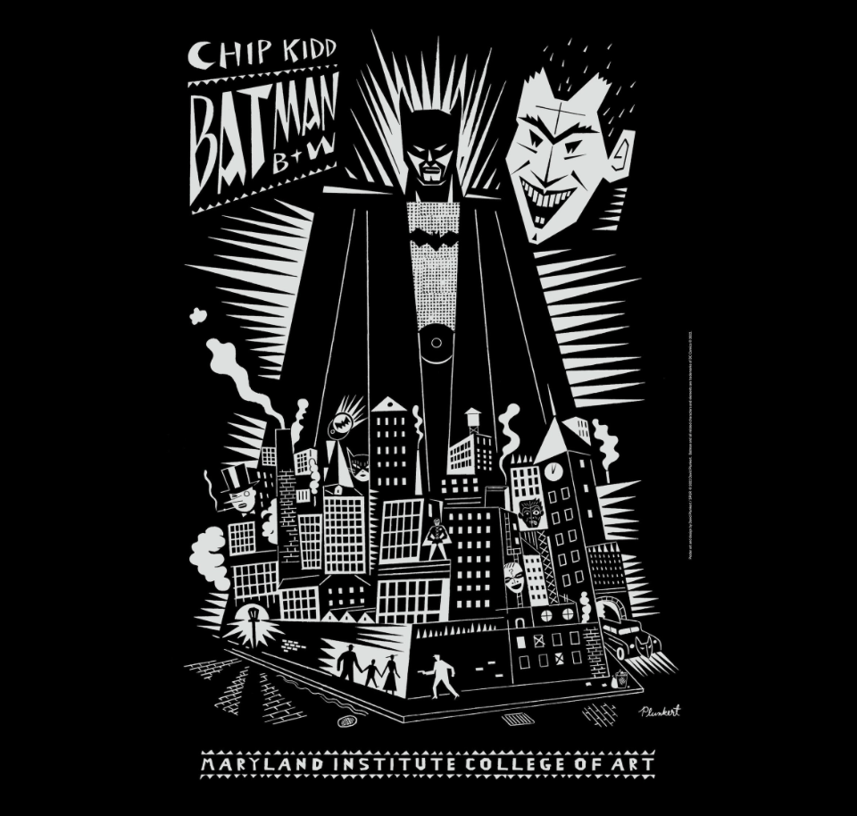
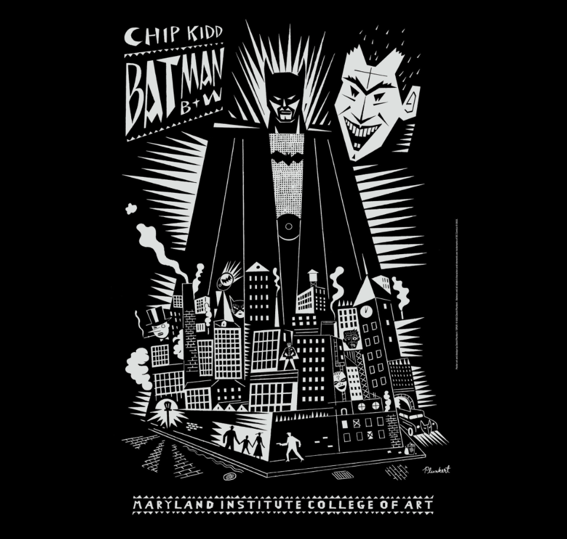

I chose Aj200 because of a few things. I initially chose bay area rapper Lil Bean because of his music and the meaning behind his art. I realized, though I did respect his work, there were other parts that made him and his brand stand out. His designer AJ. AJ not only makes clothes for his brand "Warin96", he designs for Lil Beans brand, "BENO". He also is his graphic artist for album covers as well as animated visuals. Not only is the work realy good, It is something I would want to persue in the future.


I chose Painter George because I admire his work. He has murals all over the Mission District portraying different scenes. I like drawing cars so I feel inspired by his car graphics.
 

I chose Chip Kidd because when researching graphic designers, I realized I didnt really know of any. I went through a list my other proffesor gave me and did a little research myself. Chip Kidd stood out to me because of his simple design using colors and shapes to create appealing graphics. I also like his art for his comic graphics.